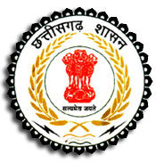

|  | |
Chhattisgarh (Chatisgarh, literally 'Thirty-Six Forts') is a state in central India. It is the 10th largest state in India, with an area of 135,194 km2 (52,199 sq mi). With a population of 25.5 million, Chhattisgarh is the 17th most-populated state of the nation. It is a source of electricity and steel for India, accounting for 15% of the total steel produced in the country. Chhattisgarh is one of the fastest-developing states in India.
The state was formed on 1 November 2000 by partitioning 16 Chhattisgarhi-speaking southeastern districts of Madhya Pradesh.Raipur was made its capital city. Chhattisgarh borders the states of Madhya Pradesh in the northwest, Maharashtra in the southwest, Andhra Pradesh (East Godavari District) in the south, Telangana (which includes eastern parts of old Bhadrachalam constituency which was part of East Godavari District prior to 1956 and later added to Khammam district and most of which was retained by Telangana after Andhra Pradesh's bifurcation in 2014) in the south, Odisha in the east, Jharkhand in the northeast and Uttar Pradesh in the north. Currently the state comprises 27 districts.More information: Here |
|
Major PlacesRaipurDhamtari Durg Gariyaband Mahasamund Baloda Bazar |
|
More information: Here |
|